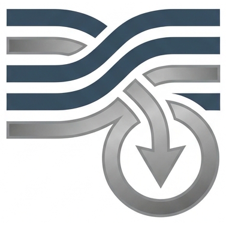

Reservoir & CO2
STORAGE LAB
홈
Home
소개
About
expand_more
info
연구실 소개
About the Lab
biotech
연구실 장비
Equipment
연구
Research
expand_more
category
연구 분야
Research Areas
science
프로젝트
Projects
연구 활동
Activities
expand_more
groups
연구실 활동
Lab Activities
library_books
연구 성과
Publications
구성원
Members
Contact
Contact
EN
menu
홈
Home
소개
About
expand_more
연구실 소개
About the Lab
연구실 장비
Equipment
연구
Research
expand_more
연구 분야
Research Areas
프로젝트
Projects
연구 활동
Activities
expand_more
연구실 활동
Lab Activities
연구 성과
Publications
구성원
Members
Contact
Contact
EN
Home
/
프로젝트
Projects
연구 배경
Background
연구 내용
What We Do
RELATED
관련 프로젝트
Related Projects
arrow_back
전체 프로젝트 목록으로
BACK TO ALL PROJECTS